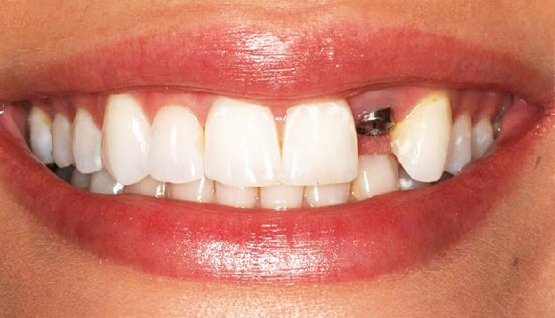

علائم جوش نخوردن ایمپلنت دندان چیست؟
ایمپلنت های دندانی معمولاً روش های بسیار قابل پیش بینی و موفقیت
آمیزی هستند. اما مانند سایر روش های دندانپزشکی، ممکن است همیشه
کارساز نباشد. شکست ایمپلنت دندان معمولاً یک موقعیت نادر است، اما
اگر برای شما اتفاق افتاد، نیازی به وحشت کردن نیست. برای یادگیری
نحوه تشخیص اینکه چه زمانی ایمپلنت دندان جدید شما نیاز به ارزیابی
بیشتری دارد و برای آگاه بودن از این که علائم جوش نخوردن ایمپلنت
دندان چیست؟
پروسه جوش خوردن ایمپلنت دندان
ایمپلنتها از فلز تیتانیوم ساخته شده اند و فرایند کاشت ایمپلنت
دندان، یک فرآیند بیولوژیکی وجود دارد که به نام osseointegration
شناخته می شود و به آنها اجازه عملکرد می دهد. در طی
استئواینتگراسیون، بدن شما سلول های استخوانی زنده تولید می کند تا
در اطراف سطح ایمپلنت رشد کنند و آن را به استخوان فک شما متصل کنند.
با گذشت زمان، استخوان سالم به احاطه ایمپلنت ادامه می دهد. اگر
استئواینتگراسیون آنطور که باید اتفاق نیفتد، گهگاه می تواند بعد از
کاشت مشکل ایجاد کند.
علائم شکست ایمپلنت دندان
کاشت ایمپلنت دندان یک روش اصلی است که باید به دقت در مورد آن فکر
کنید. این به این دلیل است که این روش درمان، دندان ها و دهان شما را
که بخش ظریفی از بدن شما است، درگیر می کند. موارد زیادی وجود دارد
که در طول یک روش کاشت ایمپلنت دندانی اگر توسط یک متخصص آموزش دیده
با تجربه انجام نشود، ممکن است اشتباه کند. ما علائمی را که پس از
کاشت ایمپلنت دندان باید مراقب آنها باشید و متوجه شوید که
ایمپلنتتان جوش نخورده است را فهرست کرده ایم. شکست ایمپلنت دندانی
ممکن است در اولین مراحل بعد از عمل رخ دهد، یا ممکن است به یک شکست
طولانی مدت تبدیل شود. برخی از متداول ترین علائم شکست ایمپلنت دندان
عبارتند از:
-
درد و ناراحتی شدید: ممکن است در طول روند بهبودی کمی درد را
تجربه کنید. با این حال، درد می تواند نشانه ای از شکست ایمپلنت
دندان باشد. چگونه می توانید تفاوت بین این دو نوع درد را تشخیص
دهید؟ در طول روند بهبودی، در چند روز اول درد را تجربه خواهید
کرد. درد آنچنان شدید نیست و با استفاده از داروهای مسکن تجویز
شده توسط پزشک قابل کنترل است. در صورت شکست ایمپلنت دندانی، درد
و ناراحتی سختی را تجربه خواهید کرد، این درد مدت ها بعد از عمل
رخ می دهد. اگر چنین تجربه ای دارید، توصیه می شود قبل از اینکه
خیلی دیر شود برای معاینه به دندانپزشک خود مراجعه کنید.
-
فرورفتگی لثه در اطراف ایمپلنت : دو دلیل عمده که باعث فرورفتگی
لثه در اطراف ایمپلنت می شود عبارتند از، قرارگیری نامناسب
ایمپلنت ها و ناکافی بودن لثه و بافت استخوانی برای نگه داشتن
ایمپلنت. چگونه می توانید بگویید که در اطراف ایمپلنت خود دچار
فرورفتگی لثه شده اید؟ خوب، اولین علامت تاج ایمپلنت غیرطبیعی
طولانی خواهد بود. به دنبال آن التهاب دردناک اطراف ایمپلنت
ایجاد می شود. برای جلوگیری از این امر، جراح شما باید ایمپلنت
را در موقعیت صحیح قرار دهد. زاویه بندی نیز بخش مهمی از این روش
است که باید با استفاده از تشخیص و برنامه ریزی ایمپلنت دندان
دیجیتال انجام شود. علاوه بر این، با رعایت رژیم غذایی سالم و
بهداشت دهان و دندان از داشتن لثه و بافت استخوانی سالم اطمینان
حاصل کنید.
-
مشکل در جویدن و گاز گرفتن: آیا برای جویدن غذا مشکل دارید؟ این
می تواند نشانه ای از شکست ایمپلنت دندان باشد. در هیچ زمان
معینی نباید هنگام غذا خوردن یا صحبت کردن یا جویدن مواد دچار
هرگونه مشکلی شوید. ایمپلنت ها طوری ساخته می شوند که عملکرد و
احساسی شبیه به دندان های طبیعی داشته باشند. هر درد مرتبط با
ایمپلنت دندان نشانه خوبی نیست. این دقیقاً شبیه احساس درد هنگام
جویدن با حفره دندان است.
-
تعویض و شل شدن ایمپلنت: اگر ایمپلنت دندان شما به درستی انجام
شود، حتی وجود آن را در داخل دهان احساس نخواهید کرد. ایمپلنت ها
هرگز نباید احساس وجود داشتن یک جسم خارجی در دهان شما را بدهد.
اگر ایمپلنت به درستی روی لثه های شما قرار نگرفته باشد، هنگام
صحبت، خوردن یا لمس آن احساس می کنید که تکان می خورد. این
ساده ترین علامت برای تشخیص شکست و جوش نخوردن ایمپلنت است. در
صورتی که ایمپلنت دندانی متحرک و شل شد، فوراً با دندانپزشک خود
مشورت کنید. اگر ایمپلنت شل بدون مراقبت رها شود، می تواند در
ظاهر لبخند شما اختلال ایجاد کند یا به لثه ها و استخوان فک شما
آسیب جدی وارد کند.
-
لثه های متورم: تورم جزئی بعد از عمل طبیعی است. با این حال،
انتظار می رود این در طی چند روز برطرف شود. اگر ادامه یابد و
حتی ملتهب شود، جای نگرانی است. اگر لثه های شما به شدت متورم و
قرمز به نظر می رسد، نشانه عفونت است. در صورت عدم درمان، این
عفونت می تواند به بقیه دهان شما سرایت کند و در موارد شدید به
خون شما سرایت کند. این می تواند یک وضعیت سلامت خطرناک ایجاد
کند. درمان عفونتی که تشدید شده کار سختی است، بدون ذکر درد
شدیدی که تجربه خواهید کرد. بهترین کاری که می توان انجام داد
اگر تورم بعد از مرحله بهبودی ادامه پیدا کرد این است که با
دندانپزشک خود مشورت کنید و در اسرع وقت آن را درمان کنید.
-
ایمپلنت Micro-Movements: گاهی اوقات جراح شما می تواند بلافاصله
پس از کاشت ایمپلنت، تاج دندان را روی آن قرار دهد. این روش در
مقایسه با انجام کاشت و انتظار تا زمانی که با استخوان فک شما
ادغام شود قبل از قرار دادن تاج دندان به زمان ترمیم کمتری نیاز
دارد. در ابتدا از بازدیدهای چکاپ کمتر لذت خواهید برد. با این
حال، اگر استخوان فک شما به اندازه کافی قوی نباشد، این روش می
تواند فشار زیادی بر آن وارد کند که می تواند باعث شکست
ایمپلنت شود. شما می توانید با گرفتن اشعه ایکس که حرکات ریز
ایمپلنت را نشان می دهد، این را تشخیص دهید.
-
واکنش های آلرژیک ناگهانی ایمپلنت های دندانی از آلیاژ تیتانیوم
ساخته شده اند که در برخی افراد واکنش های آلرژیک ایجاد می کند.
برخی از علائم واکنش های آلرژیک عبارتند از از دست دادن چشایی،
تورم اطراف لثه و احساس سوزن سوزن شدن. واکنش های آلرژیک ناگهانی
نشانه ای از شکست ایمپلنت دندانی است زیرا نشان می دهد که بدن
شما در حال رد کردن ایمپلنت است.
-
دندان قروچه دندان قروچه می تواند به دلیل شکست طولانی مدت
ایمپلنت دندان باشد که به دلایل مختلفی مانند استرس، از دست دادن
دندان ها یا نامرتبی دندان ها رخ می دهد. برخی افراد هنگام خواب
نیز دندان قروچه را تجربه می کنند. برای شروع، در جایی که
ایمپلنت شما با درد مداوم در لثه در استخوان فک همراه است، فشار
را احساس خواهید کرد. دندان قروچه باعث می شود که ایمپلنت با
استخوان فک شما یکپارچه شود، زیرا به دلیل فشار بیش از حد روی
دندان های شما ناشی از روش ایمپلنت دندانی است. اگر دوره هایی از
دندان قروچه دارید، ممکن است نشانه ای از شکست ایمپلنت دندان
باشد. بنابراین باید به دندانپزشک خود مراجعه کنید تا بررسی کند
که آیا ایمپلنت به درستی با استخوان فک شما همراستا شده است یا
خیر.
چگونه می توانید به سرعت علائم شکست ایمپلنت دندان را تشخیص دهید؟
در بیشتر موارد، روش های کاشت دندان موفقیت آمیز هستند و فقط تعدادی
از ایمپلنت های دندانی ممکن است شکست بخورند. همانطور که موارد شکست
ایمپلنت دندان ممکن است ناچیز به نظر برسد، باید بدانید که چگونه می
توانید به سرعت علائم شکست ایمپلنت دندان را تشخیص دهید. هنگامی که
استخوان به درستی در اطراف ایمپلنت رشد نمی کند، علامت اصلی شکست
ایمپلنت، اغلب تحرک آن است. در ابتدا، این حرکت ممکن است خفیف باشد و
فقط توسط دندانپزشک قابل تشخیص باشد، اما با گذشت زمان، ایمپلنتی که
یکپارچه نشده است احساس لرزش می کند و می تواند هنگام جویدن یا صحبت
کردن حرکت کند. ایمپلنتی که شکست خورده است به طور مداوم متحرک خواهد
بود. ایمپلنت دندانی قرار است مانند دندان های طبیعی در دهان شما
باشد. لحظه ای که احساس عجیبی را تشخیص می دهید، می تواند نشانه ای
از شکست ایمپلنت دندان باشد. بسیار مهم است که قبل از اینکه به کاشت
ایمپلنت دندان رضایت دهید، یک مشاوره کامل با جراح و دندانپزشک خود
انجام دهید. اطمینان حاصل کنید که آنها اطلاعات پزشکی شما را بررسی
می کنند تا مطمئن شوند که آلرژی ندارید و لثه و استخوان فک شما برای
کاشت به اندازه کافی قوی هستند. سایر علائم ایمپلنت دندانی که
استخوان بندی را از دست داده است می تواند شامل درد، تورم یا عفونت
باشد، اما همیشه اینطور نیست. اگر دندانپزشک متوجه شود که ایمپلنت
شما متحرک است، ممکن است برای بررسی رشد استخوان شما رادیوگرافی را
توصیه کند. عکسبرداری با اشعه ایکس از ایمپلنت ناموفق احتمالاً از
دست دادن قابل توجه استخوان در اطراف بخش فلزی ایمپلنت دندانی را
نشان می دهد.
عوامل خطر برای یک ایمپلنت دندانی ناموفق
موفقیت یک روش ایمپلنت دندانی به عوامل زیادی بستگی دارد، اما برخی
عادات و شرایط پزشکی می توانند خطر لق شدن ایمپلنت را افزایش دهند.
بیماری لثه و دندان قروچه می تواند به ایمپلنتی که در حال بهبود است
آسیب برساند. بیماری هایی مانند پوکی استخوان که به استحکام و تراکم
استخوان آسیب می زند، می توانند جوش خوردن پیچ ایمپلنت را دشوار
کنند. طبق مطالعه ای که در مجله دندانپزشکی بالینی و تجربی منتشر
شده است، درمان مداوم سرطان ممکن است دلیلی برای توقف عمل ایمپلنت
باشد، زیرا پرتودرمانی برای سرطان های سر و گردن ممکن است از ترمیم
طبیعی استخوان جلوگیری کند. برخی از داروها همچنین می توانند شما را
در معرض خطر شکست ایمپلنت قرار دهند. ترکیبی در داروهای ضدافسردگی
وجود دارد که بر میزان متابولیسم استخوان تأثیر می گذارد، افرادی که
این داروها را مصرف می کنند، ممکن است با مشکلاتی بعد از جراحی
مواجه شوند. تحقیقات منتشر شده در مجله تحقیقات دندانپزشکی همچنین
اشاره می کند که سیگار کشیدن ممکن است خطر شکست ایمپلنت دندان را
افزایش دهد، بسته به اینکه در کجای دهان ایمپلنت قرار داده شده است.
دندانپزشک شما ممکن است به شما توصیه کند که سیگار را به طور کامل یا
حداقل تا زمانی که یکپارچگی استخوان کامل شود متوقف کنید.
درمان ایمپلنت شکست خورده
خبر خوب این است که می توانید ایمپلنت دندانی ناموفق را در حالی که
تحت بی حسی موضعی هستید بردارید. اگر استخوان در اطراف محل ایمپلنت
برداشته شده سالم باشد، نیازی به پیوند استخوان نخواهد بود. اگر از
دست دادن استخوان وجود داشته باشد، دندانپزشک شما می تواند پیوند
استخوان را برای بهبود محل قبل از جایگزینی ایمپلنت توصیه کند. قبل
از قرار دادن ایمپلنت جدید، پیوند استخوان شما باید بهبود یابد. در
طول بهبودی، دندانپزشک شما احتمالاً راه هایی را برای کاهش عوامل
خطری که باعث شکست ایمپلنت شده اند، مانند ترک سیگار یا انتظار برای
تکمیل هر گونه درمان سرطان، به شما توضیح دهد.

پیشگیری از عوارض شکست ایمپلنت
قبل از کاشت ایمپلنت، با دندانپزشک خود در مورد عوامل خطری که می
تواند موفقیت ایمپلنت شما را محدود کند، صحبت کنید. تغییر در وضعیت
پزشکی یا داروهای شما میتواند بر بهبودی و ادغام استخوانی تأثیر
بگذارد، بنابراین دندانپزشک یا متخصص دندانپزشک خود را از هرگونه
تغییر در سلامتی و سابقه پزشکی خود مطلع کنید. بهداشت دهان و دندان
خوب نیز کلیدی برای جلوگیری از مشکلات ایمپلنت است. مسواک زدن دو بار
در روز و شستشو با دهانشویه آنتی باکتریال می تواند به حفظ سلامت لثه
ها و دور نگه داشتن باکتری ها در زمانی که دندان جدید شما در جای خود
قرار می گیرد کمک کند. این مقاله فقط جهت اهداف آموزشی است. این
محتوا قرار نیست جایگزینی برای توصیه های پزشکی حرفه ای، تشخیص یا
درمان باشد. همیشه از دندانپزشک، پزشک یا سایر ارائه دهندگان مراقبت
های بهداشتی واجد شرایط مشاوره بگیرید.